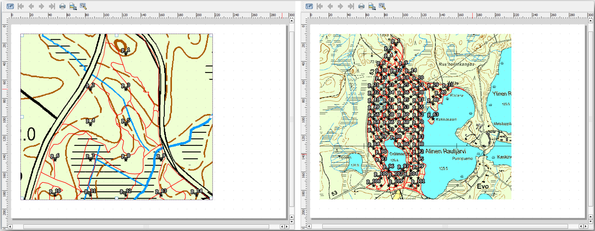
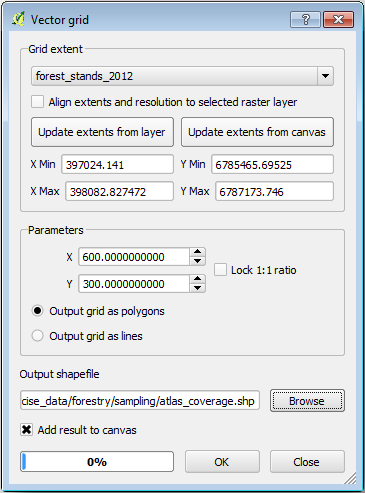
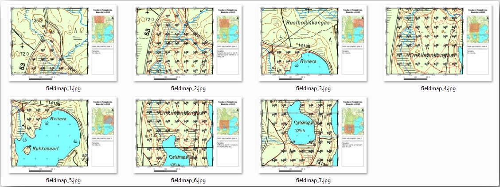

14.6. သင်ခန်းစာ - Atlas Tool ဖြင့် အသေးစိတ်ကျသော မြေပုံများဖန်တီးခြင်း (Lesson: Creating Detailed Maps with the Atlas Tool)
Systematic sampling design သည် အဆင့်သင့်ဖြစ်နေပြီး ကွင်းဆင်းအဖွဲ့များသည် GPS ကိုဩဒိနိတ်များကို GPS များထဲသို့ ထည့်သွင်းပြီးဖြစ်ပါသည်။ နမူနာကွက်တိုင်းတွင် တိုင်းတာထားသော အချက်အလက်များကို စုစည်းရန် field data form တစ်ခုလည်း ရှိပါမည်။ နမူနာကွက်တိုင်းကို လွယ်ကူစွာရှာဖွေနိုင်ရန် ကွင်းဆင်းအဖွဲ့များသည် အသေးစိတ်မြေပုံများကို တောင်းဆိုထားပါသည်၊ ထိုအသေးစိတ်မြေပုံများတွင် နမူနာကွက်များနှင့်အတူ မြေပြင်အချက်အလက်အချို့ကို ရှင်းလင်းစွာမြင်ရနိုင်ပြီး မြေပုံဧရိယာအကြောင်း အချက်အလက်အချို့ကိုလည်း မြင်ရနိုင်ပါသည်။ Atlas tool ကိုအသုံးပြု၍ မြေပုံများကို အသုံးများသော format တစ်ခုဖြင့် အလိုအလျောက်ထုတ်လုပ်ပေးနိုင်ပါသည်။
ဤသင်ခန်းစာအတွက် ရည်မှန်းချက်- ကွင်း inventory လုပ်ငန်းများတွင် အထောက်အကူဖြစ်စေမည့် အသေးစိတ်ကျသောမြေပုံများကို ထုတ်လုပ်ရန် QGIS ထဲရှိ Atlas tool အသုံးပြုနည်းကို လေ့လာရန်။
14.6.1. ★☆☆ လိုက်လုပ်ကြည့်ပါ - Print Layout ပြင်ဆင်ခြင်း (Follow Along: Preparing the Print Layout)
သစ်တောဧရိယာနှင့် နမူနာကွက်များ၏ အသေးစိတ်မြေပုံများကို အလိုအလျောက်မထုတ်လုပ်မီတွင် ကွင်းလုပ်ငန်းများအတွက် အသုံးဝင်မည်ဟုယူဆသော element များအားလုံးပါဝင်သော မြေပုံ template တစ်ခုဖန်တီးရန် လိုအပ်ပါသည်။ သင့်တင့်သော style တစ်ခုဖြစ်ရန် အရေးအကြီးဆုံးဖြစ်သော်လည်း မြေပုံတွင် ပြည့်စုံစေရန် အခြား element များစွာကိုလည်း ထည့်သွင်းရန် လိုအပ်ပါလိမ့်မည်။
ယခင်သင်ခန်းစာမှ
forest_inventory.qgsQGIS project ကိုဖွင့်ပါ။ အောက်ပါ layer များ ပါဝင်နေသင့်ပါသည်-forest_stands_2012 (50 % အလင်းဖောက်နှုန်းဖြင့် အစိမ်းရောင်ဖြည့်ထားပြီး အစိမ်းရင့်ရောင် border မျဉ်းများဖြင့်)
systematic_plots_clip
rautjarvi_aerial
Project ကို
map_creation.qgsဟူသည့် အမည်အသစ်ဖြင့် သိမ်းဆည်းပါ။
Print ထုတ်နိုင်သော မြေပုံတစ်ခုကိုဖန်တီးရန် Layout Manager ကိုအသုံးပြုရပါမည်-
 Layout Manager… ကိုဖွင့်ပါ။
Layout Manager… ကိုဖွင့်ပါ။Layout manager dialog ထဲတွင်-
New from template အောက်တွင် Empty layout entry ဘေးရှိ Create… ခလုတ်ကိုနှိပ်ပါ
Print layout ကို
forest_mapဟုအမည်ပေးပါ။OK ကိုနှိပ်ပါ။ Print layout အသစ်တစ်ခုကို ဖန်တီးပေးမည်ဖြစ်ပြီး စာရွက်အလွတ်တစ်ခုအနေဖြင့် ပွင့်လာမည်ဖြစ်သည်။
Print Layout window ထဲတွင် property များကို A4 စာရွက်အရွယ်အစားအတွက် သတ်မှတ်ပေးပါ-
စာရွက်ပေါ်တွင် right-click နှိပ်ပြီး Page properties ကိုရွေးပါ။ Layout ၏ညာဘက်အခြမ်းတွင် Page properties panel ပွင့်လာမည်ဖြစ်သည်။
Size တွင် A4 ဟုတ်မဟုတ် စစ်ဆေးပါ။
Orientation သည် Landscape ဟုတ်မဟုတ် စစ်ဆေးပါ။
Page properties panel ၏ဘေးရှိ Layout tab ကိုဖွင့်ပြီး Export resolution တွင်
300 dpiသတ်မှတ်ပါ။
Canvas grid ကိုအသုံးပြုပြီး element များကို နေရာချပါက မြေပုံပြင်ဆင်ရာတွင် ပိုမိုလွယ်ကူစေပါသည်။ Layout grid အတွက် setting များကို စစ်ဆေးကြည့်ပါ-
Layout tab ထဲတွင် Guides and Grid region ကို အကျယ်ဖြန့်ပါ။
Grid spacing တွင်
10 mmသတ်မှတ်ပြီး Snap tolerance တွင်5 pxသတ်မှတ်ပါ။
Grid ကိုအသုံးပြုနိုင်စေရန် activate ပြုလုပ်ပေးရန်လိုအပ်ပါသည်-
menu ကိုဖွင့်ပါ။
Show grid ကိုအမှန်ခြစ်ပါ။
Snap to grid ကိုအမှန်ခြစ်ပါ။
Guides option များကို default အားဖြင့် အမှန်ခြစ်ထားမည်ဖြစ်သည်၊ Layout ထဲတွင် element များကို ရွှေ့သောအခါ guide မျဉ်းများကို မြင်ရနိုင်စေပါသည်။
Layout ထဲသို့ element များ စတင်ထည့်သွင်းနိုင်ပြီဖြစ်ပါသည်။ ဦးစွာ မြေပုံ element တစ်ခုကို ထည့်သွင်းပါ၊ ထိုမှသာ layer များ၏သင်္ကေတပြောင်းလဲမှုပြုလုပ်ပါက မြေပုံ canvas သည် မည်သည့်ပုံစံဖြစ်နေမည်ကို စစ်ဆေးနိုင်မည်ဖြစ်သည်-
 Add Map ခလုတ်ကို နှိပ်ပါ။
Add Map ခလုတ်ကို နှိပ်ပါ။Canvas ပေါ်တွင် click နှိပ်ပြီး လေးထောင့်ကွက်တစ်ခု ဖိဆွဲပါ။

Mouse cursor သည် canvas grid များတွင် မည်ကဲ့သို့ ဆွဲကပ် (snap) ဖြစ်သွားသည်ကို သတိထားကြည့်ပါ။ အခြား element များထည့်သွင်းသောအခါ ဤ function ကိုအသုံးပြုပါ။ ပိုမိုတိတိကျကျ လိုချင်ပါက grid Spacing setting ကိုပြောင်းလဲပါ။ အချို့ point များ၌ grid နှင့် snapping မလုပ်လိုပါက menu ထဲတွင် အမှန်ခြစ်ခြစ်ခြင်း သို့မဟုတ် အမှန်ခြစ်ဖြုတ်ခြင်း လုပ်ပေးနိုင်ပါသည်။
14.6.2. ★☆☆ လိုက်လုပ်ကြည့်ပါ - နောက်ခံမြေပုံထည့်သွင်းခြင်း (Follow Along: Adding Background Map)
Layout ကို ဖွင့်လျက်ထားထားပြီး မြေပုံဆီသို့ ပြန်သွားပါ။ နောက်ခံ data အချို့ထည့်သွင်းပြီး မြေပုံအကြောင်းအရာ ရှင်းလင်းနိုင်သမျှ ရှင်းလင်းစေနိုင်အောင် style ဖန်တီးပေးကြည့်ပါမည်။
exercise_data\forestry\folder ထဲရှိbasic_map.tifနောက်ခံ raster ဖိုင်ကို ထည့်သွင်းပါ။Raster အတွက် CRS မေးမြန်းပါက ETRS89 / ETRS-TM35FIN CRS ကိုရွေးချယ်ပါ။
နောက်ခံမြေပုံသည် style ထည့်သွင်းပြီးသားဖြစ်ပါသည်။ ထိုသို့သော အသင့်သုံးနိုင်သည့် raster အမျိုးအစားသည် အလွန်အတွေ့များပါသည်။ ၎င်းကို vector data မှဖန်တီးထားပြီး စံ format တစ်ခုဖြင့် style ပြင်ဆင်ထားကာ raster တစ်ခုအနေဖြင့် သိမ်းဆည်းထားသောကြောင့် vector layer များစွာကို style ပြင်ဆင်ရန် စိတ်ပူစရာမလိုအပ်တော့ပါ။
နမူနာကွက်များလိုင်း ၄ လိုင်း သို့မဟုတ် ၅ လိုင်းခန့်သာ မြင်ရနိုင်အောင် zoom ဆွဲကြည့်ပါ။
နမူနာကွက်များ၏လက်ရှိ style သည် အကောင်းဆုံးပုံစံမဟုတ်သေးပါ-

နောက်ဆုံးလုပ်ခဲ့သော လေ့ကျင့်ခန်းတွင် အဖြူရောင် buffer ဖြင့် label များကို ကောင်းကင်ဓာတ်ပုံ၏အပေါ်တွင် မြင်ရနိုင်ပါသည်၊ ယခုအခါ နောက်ခံဓာတ်ပုံသည် အဖြူရောင်နီးနီးဖြစ်နေသည့်အတွက် label များကို ကြည့်ရခက်ခဲနေပါသည်။ သို့သော် print layout ထဲတွင် မည်သည့်ပုံစံပေါ်နေမလဲ စစ်ကြည့်ပါမည်-
Print layout window သို့သွားပါ။
Layout ထဲရှိ မြေပုံ element ကို select လုပ်ရန်
 Select/Move item ခလုတ်ကိုအသုံးပြုပါ။
Select/Move item ခလုတ်ကိုအသုံးပြုပါ။Item properties tab သို့သွားပါ။
 Set map extent to match main canvas extent ကိုနှိပ်ပါ။
Set map extent to match main canvas extent ကိုနှိပ်ပါ။Element ကို refresh လုပ်ရန် လိုအပ်ပါက
 Update map preview ကိုနှိပ်ပါ။
Update map preview ကိုနှိပ်ပါ။
နမူနာကွက်များကို မြေပြင်ကွင်းဆင်းအဖွဲ့များမှ ရှင်းရှင်းလင်းလင်းမြင်ရနိုင်စေရန် ပြုလုပ်လိုခြင်းဖြစ်သည်။
14.6.3. ★☆☆ မိမိကိုယ်တိုင်ကြိုးစားကြည့်ပါ - Layer များ၏ သင်္ကေတပြောင်းလဲခြင်း (Try Yourself: Changing the Symbology of the Layers)
မော်ဂျူး- အခြေခံမြေပုံတစ်ခု ဖန်တီးခြင်းနှင့် စူးစမ်းလေ့လာခြင်း (Module: Creating and Exploring a Basic Map) နှင့် မော်ဂျူး- Vector data များအား အတန်းအစားခွဲခြားခြင်း (Module: Classifying Vector Data) ကို လုပ်ဆောင်ခဲ့ပြီးဖြစ်ပါသည်။ ရရှိနိုင်သော option များနှင့် tool များအကြောင်း refresh ပြုလုပ်ရန်လိုအပ်ပါက ထို မော်ဂျူးများတွင် ပြန်ကြည့်ပါ။ သင့်ရည်ရွယ်ချက်သည် နမူနာကွက်တည်နေရာများနှင့်အမည်များကို တတ်နိုင်သမျှ ရှင်းရှင်းလင်းလင်း မြင်ရနိုင်စေရန်ဖြစ်ပြီး နောက်ခံမြေပုံ element များကိုလည်း အမြဲတမ်းမြင်ရနိုင်စေရန်ဖြစ်သည်။ အောက်ပါပုံမှ အကိုးအကားပြုနိုင်ပါသည်-

forest_stands_2012 layer ၏ အစိမ်းရောင် style ကို နောက်ပိုင်းတွင် အသုံးပြုပါမည်။ ၎င်းကို ဒီအတိုင်းထားရှိပြီး Stand နယ်နိမိတ်များကိုသာ ပြသနိုင်စေရန်-
forest_stands_2012 တွင် right-click နှိပ်ပြီး Duplicate ကိုရွေးချယ်ပါ။
forest_stands_2012 copyအမည်ရှိသော layer အသစ်တစ်ခုကို ရရှိမည်ဖြစ်ပြီး အခြား style တစ်ခုသတ်မှတ်ပေးနိုင်ပါသည်၊ ဥပမာ- အဖြည့်အရောင်မပါပဲ အနီရောင် border များဖြင့်။Style မတူညီသော forest stand layer နှစ်ခုရရှိပြီဖြစ်ပြီး သင်၏အသေးစိတ်မြေပုံအတွက် မည်သည့်တစ်ခုကို ပြသမည်ကို ဆုံးဖြတ်နိုင်ပါသည်။
Print layout window သို့ပြန်သွားပြီး မြေပုံသည် မည်သည့်ပုံစံဖြစ်နေသည်ကို ကြည့်ပါ။ အသေးစိတ်မြေပုံများဖန်တီးခြင်းအတွက် သစ်တောဧရိယာတစ်ခုလုံး၏စကေး၌ မဟုတ်ပဲ အနီးကပ်စကေးတွင် ကြည့်ကောင်းသော သင်္ကေတကို ရှာဖွေလိုခြင်းဖြစ်ပါသည်။ မြေပုံထဲတွင် သို့မဟုတ် layout ထဲတွင် zoom ချဲ့သည့်အချိန်တိုင်း
Update map preview နှင့် Set map extent to match main canvas extent ကိုသုံးရန် မမေ့ပါနှင့်။
14.6.4. ★☆☆ မိမိကိုယ်တိုင်ကြိုးစားကြည့်ပါ - အခြေခံမြေပုံ Template တစ်ခုဖန်တီးခြင်း (Try Yourself: Create a Basic Map Template)
ကြိုက်နှစ်သက်သော သင်္ကေတ ရရှိပြီးပါက print ထုတ်မည့်မြေပုံထဲသို့ အခြားအချက်အလက်များ ထပ်ထည့်နိုင်ပြီဖြစ်ပါသည်။ အနည်းဆုံး အောက်ပါ element များကိုထည့်သွင်းပါ-
ခေါင်းစဉ်
စကေးဘား
မြေပုံအတွက် Grid ဘောင်
Grid ၏ဘေးဘက်များပေါ်ရှိ ကိုဩဒိနိတ်များ
မော်ဂျူး- မြေပုံများကို အချောသပ်ပြင်ဆင်ခြင်း (Module: Laying out the Maps) ထဲတွင် အလားတူ layout တစ်ခုကို ဖန်တီးခဲ့ပြီးဖြစ်ပါသည်။ လိုအပ်ပါက ထိုမော်ဂျူးကို ပြန်ကြည့်ပါ။ အောက်ပါ ဥပမာပုံကို အကိုးအကားအဖြစ် ကြည့်ရှုနိုင်ပါသည်-
မြေပုံကို image အနေဖြင့် export ထုတ်ပြီး ကြည့်ရှုပါ။
JPG format ကိုအသုံးပြုပါ
၎င်းသည် Print ထုတ်သည့်အခါ ပေါ်မည့်ပုံစံဖြစ်ပါသည်။
14.6.5. ★☆☆ လိုက်လုပ်ကြည့်ပါ - Print Layout တွင် Element များထပ်မံထည့်သွင်းခြင်း (Follow Along: Adding More Elements to the Print Layout)
အကြံပြုပေးထားသော မြေပုံ template image များထဲတွင် canvas ၏ညာဘက်အခြမ်း၌ နေရာအလွတ်များရှိနေသည်ကို သတိထားမိပါလိမ့်မည်။ ထိုနေရာလွတ်များတွင် မည်သည့်အရာများထည့်သွင်းနိုင်မလဲ ကြည့်ကြည့်ပါမည်။ ကျွန်ုပ်တို့၏ မြေပုံအတွက် legend (ရည်ညွှန်းချက်) တစ်ခုမဖြစ်မနေမလိုအပ်ပါ၊ သို့သော် overview မြေပုံတစ်ခုနှင့် စာသားအချို့ကို မြေပုံတွင်ထည့်သွင်းပါက ပိုအသုံးဝင်ပါမည်။
Overview မြေပုံသည် ကွင်းဆင်းအဖွဲ့များအနေဖြင့် ယေဘုယျသစ်တောဧရိယာအတွင်း အသေးစိတ်မြေပုံကို နေရာချရာတွင် အကူအညီပေးပါသည်-
နောက်ထပ် မြေပုံ element ကို Canvas ထဲရှိ ခေါင်းစဉ်စာသား၏အောက်တွင် ထည့်သွင်းပါ။
Item properties tab ထဲတွင် Overview dropdown ကိုဖွင့်ပါ။
Overview frame တွင် Map 0 ဟုသတ်မှတ်ပါ။ မြေပုံအကြီးထဲတွင် မြင်ရသော extent ကို ကိုယ်စားပြုဖော်ပြပေးသည့် ထောင့်မှန်စတုဂံကွက်တစ်ခုကို မြေပုံအသေးထဲတွင် ဖန်တီးပေးမည်ဖြစ်ပါသည်။
Frame option ကိုလည်း အမှန်ခြစ်ခြစ်ပြီး အနက်ရောင်ရွေးချယ်ကာ Thickness တွင်
0.30ထားပါ။

Overview မြေပုံသည် သင်အလိုရှိသည့် သစ်တောဧရိယာ၏ overview တစ်ခုကို အမှန်တကယ်ပြသနေခြင်းမဟုတ်ပါ။ ထိုမြေပုံကို သစ်တောဧရိယာတစ်ခုလုံးကို ကိုယ်စားပြုရန်နှင့် နောက်ခံမြေပုံနှင့် forest_stands_2012 layer ကိုသာ ပြသလိုခြင်းဖြစ်ပြီး နမူနာကွက်များကို ပြသရန်မဟုတ်ပါ။ Layer များ၏ မြင်ရနိုင်မှု သို့မဟုတ် order ကို ပြောင်းလဲသည့်အခါတိုင်း ၎င်း၏မြင်ကွင်းမပြောင်းလဲစေရန်အတွက်လည်း lock ပြုလုပ်ထားလိုပါသည်။
မြေပုံဆီသို့ ပြန်သွားပါ၊ Print Layout ကိုတော့ မပိတ်ပါနှင့်။
forest_stands_2012 layer ကို right-click နှိပ်ပြီး Zoom to Layer Extent ကိုနှိပ်ပါ။
basic_map နှင့် forest_stands_2012 layer များမှလွဲ၍ ကျန် layer များအားလုံးကို ပိတ်လိုက်ပါ။
Layers panel ပေါ်တွင် Manage map themes tool ကို အကျယ်ဖြန့်ပြီး Add theme ကိုရွေးချယ်ပါ။
၎င်းကို
basic_overviewဟုအမည်ပေးပါ။Print layout သို့ ပြန်သွားပါ။
မြေပုံအသေးကို select လုပ်ထားပြီး၊ ၎င်း၏ extent ကို မြေပုံ window ထဲတွင်မြင်ရသည့် extent အတိုင်းဖြစ်စေရန် Set map extent to match main canvas extent ကိုနှိပ်ပါ။
Main properties အောက်တွင် Follow map theme ကိုအမှန်ခြစ်ပြီး
basic_overviewကိုရွေးချယ်ခြင်းဖြင့် overview မြေပုံအတွက် မြင်ကွင်းကို lock ပြုလုပ်ပါ။
Overview မြေပုံ၏ မြင်ကွင်းသည် ပြောင်းလဲတော့မည်မဟုတ်ပါ။ သို့သော် အသေးစိတ်မြေပုံသည် stand border နှင့် နမူနာကွက်များကို ပြသတော့မည်မဟုတ်ပါ။ ထိုအရာကို ပြုပြင်ကြည့်ပါမည်-
မြေပုံ window သို့ပြန်သွားပြီး မြင်ရလိုသော layer များကို select လုပ်ပါ (
systematic_plots_clip၊forest_stands_2012 copyနှင့်Basic_map)နမူနာကွက် လိုင်းအနည်းငယ်ကိုသာ မြင်ရနိုင်စေရန် zoom ထပ်ချဲ့ကြည့်ပါ။
Print Layout window သို့ပြန်သွားပါ။
Layout ထဲရှိ မြေပုံအကြီးကို select လုပ်ပါ။
Item properties ထဲတွင် Update preview နှင့် Set map extent to match main canvas extent ကိုနှိပ်ပါ။
မြေပုံအကြီးသည်သာ လက်ရှိမြေပုံမြင်ကွင်းကို ပြသနေမည်ဖြစ်ပြီး overview မြေပုံအသေးသည် lock ပြုလုပ်ထားခဲ့သော မြင်ကွင်းအတိုင်းသာ ပြသနေမည်ဖြစ်သည်။
Overview သည် အသေးစိတ်မြေပုံထဲတွင်ပြသထားသော extent အတွက် frame တစ်ခုကို ပြသပေးနေမည်ဖြစ်ပါသည်။

Template မြေပုံ သည် အဆင်သင့်ဖြစ်နေပါပြီ။ မြေပုံ၏အောက်တွင် စာသား box နှစ်ခုကို ထည့်သွင်းပါ- ‘Detailed map zone: ‘ စာသားပါရှိသော box တစ်ခုနှင့် ‘Remarks: ‘ စာသားပါရှိသော box တစ်ခုတို့ဖြစ်သည်။ အထက်ဖော်ပြပါပုံတွင် မြင်ရသည့်အတိုင်း ၎င်းတို့ကို နေရာချထားပါ။
Overview မြေပုံတွင် North arrow (မြောက်အရပ်ပြမြား) တစ်ခုကိုလည်း ထည့်သွင်းပေးနိုင်ပါသည်-
 Add North Arrow tool ကို select လုပ်ပါ။
Add North Arrow tool ကို select လုပ်ပါ။Overview မြေပုံ၏ ညာဘက်အပေါ်ထောင့်တွင် ထောင့်မှန်စတုဂံတစ်ခုကို click နှိပ်ပြီးဖိဆွဲပါ။
Item properties ထဲတွင် SVG image ကိုအမှန်ခြစ်ပါ။
ထဲတွင် မြားပုံ တစ်ခုကိုရှာဖွေပါ။
Image rotation အောက်တွင် Sync with map ကိုအမှန်ခြစ်ပြီး Map 1 (overview မြေပုံ) ကို select လုပ်ပါ။
မြား၏အရွယ်အစားကို မြေပုံအသေးပေါ်တွင် ကြည့်ကောင်းစေရန် အရွယ်အစားချိန်ညှိပါ။
အခြေခံ မြေပုံ layout အဆင်သင့်ဖြစ်ပါပြီ။ Atlas tool ကိုအသုံးပြုပြီး အသေးစိတ်မြေပုံများစွာကို ဤ format ဖြင့် ထုတ်လုပ်မည်ဖြစ်ပါသည်။
14.6.6. ★☆☆ လိုက်လုပ်ကြည့်ပါ - Atlas Coverage တစ်ခုဖန်တီးခြင်း (Follow Along: Creating an Atlas Coverage)
Atlas coverage သည် vector layer တစ်ခုသာဖြစ်ပြီး ၎င်းကို အသေးစိတ်မြေပုံများထုတ်လုပ်ရန် အသုံးပြုပါသည်၊ coverage ထဲရှိ feature တိုင်းအတွက် မြေပုံတစ်ပုံဖြစ်ပါသည်။ သစ်တောဧရိယာအတွက် အသေးစိတ်မြေပုံများ အပြည့်အစုံကို အောက်တွင်ဖော်ပြထားပါသည်-

Coverage သည် ရှိနေပြီးသား layer တစ်ခုခုဖြစ်နိုင်ပါသည်၊ သို့သော် သီးခြားရည်ရွယ်ချက်အတွက် အသစ်တစ်ခုဖန်တီးလျှင် ပိုကောင်းပါသည်။ သစ်တောဧရိယာကို လွှမ်းခြုံသော polygon grid တစ်ခုကို ဖန်တီးကြည့်ပါမည်-
QGIS map view ထဲတွင် menuselection:Vector –> Research Tools –>
 ကိုဖွင့်ပါ။
ကိုဖွင့်ပါ။အောက်ပါပုံတွင် ပြထားသည့်အတိုင်း tool ကို သတ်မှတ်ပါ-
 Output ကို
atlas_coverage.shpအနေဖြင့် သိမ်းဆည်းပါ။atlas_coveragelayer အသစ်တွင် polygon များအရောင်အဖြည့် မဖြစ်စေရန် style ပြင်ဆင်ပါ။
Polygon အသစ်များသည် သစ်တောဧရိယာတစ်ခုလုံးကို လွှမ်းခြုံနေပြီး မြေပုံတစ်ခုစီ (polygon တစ်ခုစီမှ ဖန်တီးထားသော) တွင် ပါဝင်သည်များကို သိရှိနိုင်ပါသည်။

14.6.7. ★☆☆ လိုက်လုပ်ကြည့်ပါ - Atlas Tool ကို Set up လုပ်ခြင်း (Follow Along: Setting Up the Atlas Tool)
နောက်ဆုံးအဆင့်မှာ Atlas tool ကို set up လုပ်ရန်ဖြစ်သည်-
Print layout ကို ပြန်သွားပါ။
ညာဘက် panel ထဲရှိ Atlas generation tab ကိုသွားပါ။
အောက်ပါအတိုင်း option များကို သတ်မှတ်ပါ-

Atlas tool သည်
atlas_coverageအတွင်းရှိ feature (polygon) များကို အသေးစိတ်မြေပုံတိုင်းအတွက် focus (ဆုံချက်) အနေဖြင့် အသုံးပြုမည်ဖြစ်ပါသည်။ Layer ထဲရှိ feature တိုင်းအတွက် မြေပုံတစ်ခုကို output ထုတ်ပေးပါလိမ့်မည်။ Hidden coverage layer ကိုရွေးထားခြင်းဖြင့် Atlas tool သည် output မြေပုံများထဲတွင် polygon များကို ပြသပေးမည်မဟုတ်ပါ။
လုပ်ဆောင်စရာတစ်ခုကျန်ရှိပါသေးသည်။ Output မြေပုံတိုင်းအတွက် update လုပ်ပေးရမည့် မြေပုံ element ကို Atlas tool အားပြောပြပေးရန် လိုအပ်ပါသည်။ Feature တိုင်းအတွက် ပြောင်းလဲပေးရမည့် မြေပုံသည် နမူနာကွက်များ၏အသေးစိတ်မြင်ကွင်းများပါဝင်သော canvas ထဲရှိ ပိုကြီးသော မြေပုံ element ဖြစ်ပါသည်-
ပိုကြီးသော မြေပုံ element (
Map 0) ကို select လုပ်ပါ။Item properties tab သို့သွားပါ။
Controlled by atlas ကိုအမှန်ခြစ်ပါ။
Marging around feature တွင်
10%ဟုသတ်မှတ်ပါ။ မြင်ကွင်း extent သည် polygon များထက် 10% ပိုကြီးနေပါလိမ့်မည်၊ ဆိုလိုသည်မှာ အသေးစိတ်မြေပုံများတွင် 10% overlap ရှိနေပါလိမ့်မည်။
Preview tool ကိုအသုံးပြုပြီး မြေပုံများ မည်သည့်ပုံစံဖြစ်နေမည်ကို အကြိုကြည့်ရှုနိုင်ပါသည်-
 ခလုတ်ကိုအသုံးပြုပြီး Atlas preview များကို activate လုပ်ပါ သို့မဟုတ် Atlas toolbar ကိုမမြင်ရပါက မှတဆင့် activate လုပ်ပါ။
ခလုတ်ကိုအသုံးပြုပြီး Atlas preview များကို activate လုပ်ပါ သို့မဟုတ် Atlas toolbar ကိုမမြင်ရပါက မှတဆင့် activate လုပ်ပါ။Atlas toolbar ထဲရှိ သို့မဟုတ် menu ထဲရှိ မြား များကို အသုံးပြုပြီး မြေပုံများကို ရွှေ့နိုင်ပါသည်။
အချို့မြေပုံများသည် မလိုချင်သောဧရိယာများကို လွှမ်းခြုံနေပါသည်။ ထို အသုံးမလိုသော မြေပုံများကို print မထုတ်စေရန် လုပ်ဆောင်ကြည့်ပါမည်။
14.6.8. ★☆☆ လိုက်လုပ်ကြည့်ပါ - Coverage Layer ကို တည်းဖြတ်ပြင်ဆင်ခြင်း (Follow Along: Editing the Coverage Layer)
မလိုချင်သောဧရိယာများအတွက် polygon များကိုဖယ်ရှားခြင်းအပြင် မြေပုံထဲရှိ label စာသားများကို coverage layer ၏ Attribute table မှအကြောင်းအရာများဖြင့် label တပ်နိုင်ရန် ပြင်ဆင်သတ်မှတ်ပေးနိုင်ပါသည်-
Map view သို့ပြန်သွားပါ။
atlas_coverage layer အတွက် editing ကိုဖွင့်ပါ။
အောက်ပါပုံထဲတွင် အဝါရောင်ဖြင့် select လုပ်ထားသော Polygon များကို ရွေးချယ်ပါ၊
Select လုပ်ထားသော polygon များကို ဖယ်ရှားပါ။
Editing ကိုပိတ်ပြီး save လုပ်ပါ။

Print layout သို့ပြန်သွားပြီး Atlas ၏ preview များသည် layer ထဲတွင် သင်ချန်ထားခဲ့သော polygon များကိုသာ အသုံးပြု/မပြု စစ်ဆေးပါ။
မြေပုံထဲတွင် label အကြောင်းအရာများကို ပြင်ဆင်သတ်မှတ်ရန်အတွက် သင်အသုံးပြုနေသော coverage layer တွင် အသုံးဝင်သောအချက်အလက်များမပါရှိသေးပါ။ ပထမအဆင့်အနေဖြင့် ၎င်းတို့ကို ဖန်တီးရမည်ဖြစ်သည်၊ ဥပမာအားဖြင့် polygon ဧရိယာများအတွက် zone code တစ်ခုနှင့် ကွင်းဆင်းအဖွဲ့များအတွက်အသုံးဝင်မည့် မှတ်ချက်ပါရှိသော field တစ်ခု တို့ကို ထည့်သွင်းပေးနိုင်ပါသည်-
atlas_coverage layer အတွက် Attribute table ကိုဖွင့်ပါ။
Editing ကိုဖွင့်ပါ။
 calculator ကိုအသုံးပြုပြီး အောက်ပါ field နှစ်ခုကို ဖန်တီးပါ။
calculator ကိုအသုံးပြုပြီး အောက်ပါ field နှစ်ခုကို ဖန်တီးပါ။Zoneဟူသော အမည်ဖြင့် field တစ်ခုဖန်တီးပြီး အမျိုးအစားတွင် Whole number (integer) ကိုရွေးပါ။Expression box ထဲတွင်
$rownumဟုရေးပါ။Remarksဟူသော နောက်ထပ် field တစ်ခုကို ဖန်တီးပြီး Text (string) အမျိုးအစားရွေးကာ width တွင်255ဟုသတ်မှတ်ပါ။Expression box ထဲတွင်
'No remarks.'ဟုရိုက်ထည့်ပါ။ ၎င်းသည် polygon များအားလုံးအတွက် default တန်ဖိုးအားလုံးကို သတ်မှတ်ပေးပါလိမ့်မည်။
Forest manager တွင် ဧရိယာနှင့်ပတ်သက်သောအချက်အလက်အချို့ ရှိမည်ဖြစ်ပြီး၊ ထိုအချက်အလက်များသည် ကွင်းဆင်းသောအခါ အသုံးဝင်နိုင်ပါမည်။ ဥပမာ- တံတားရှိနေမှု၊ စိမ့်စမ်းရှိနေမှု သို့မဟုတ် ထိန်းသိမ်းကာကွယ်ထားသောမျိုးစိတ်များ၏ တည်နေရာများ။ atlas_coverage layer ကို edit mode တွင်ထားရှိပြီး အောက်ပါစာသားများကို သက်ဆိုင်ရာ polygon များ၏ Remarks field ထဲတွင် ထည့်သွင်းပါ (edit လုပ်ရန် cell ကို click နှစ်ချက်နှိပ်ပါ)-
Zone 2 အတွက် -
Bridge to the North of plot 19. Siberian squirrel between p_13 and p_14.Zone 6 အတွက် -
Difficult to transit in swamp to the North of the lake.Zone 7 အတွက် -
Siberian squirrel to the South East of p_94.Editing ကိုပိတ်ပြီး save လုပ်ပါ။
atlas_coverage layer ၏ attribute table မှ အချက်အလက်များကို စာသား label အဖြစ်အသုံးပြုလိုကြောင်း Atlas tool ကိုပြောပြပေးရပါမည်။
Print Layout ကိုပြန်သွားပါ။
Detailed map...ပါဝင်သော စာသား label ကို select လုပ်ပါ။Font size တွင်
12ထားပါ။Label ထဲရှိ စာသား၏အဆုံးတွင် cursor ကိုထားပါ။
Item properties tab ထဲတွင် Main properties အတွင်း၌ Insert or Edit an Expression… ကိုနှိပ်ပါ။
Function list ထဲတွင် Field and Values အောက်ရှိ Zone field ပေါ်တွင် click နှစ်ချက်နှိပ်ပါ။
OK ကိုနှိပ်ပါ။
Item properties ထဲရှိ box အတွင်းမှ စာသားသည်
Detail map inventory zone: [% "Zone" %]ဟု ပြသသင့်ပါသည်။ atlas_coverage layer မှ သက်ဆိုင်ရာ feature အတွက် Zone field ၏တန်ဖိုးဖြင့်[% "Zone" %]ကို အစားထိုးပေးမည်ဖြစ်ပါသည်။Atlas preview မြေပုံအမျိုးမျိုးကို ကြည့်ရှုပြီး label အကြောင်းအရာများကို စမ်းသပ်ကြည့်ပါ။
Remarks: စာသားဖြင့် label များအတွက် zone အချက်အလက်ပါဝင်သော field ကိုအသုံးပြုပြီး အထက်ပါနည်းအတိုင်းလုပ်ဆောင်ပါ။ Expression မရေးသားမီတွင် စာကြောင်းအလွတ် တစ်ကြောင်း ချန်ထားနိုင်ပါသည်။ Zone 2 ၏ preview ရလာဒ် အောက်ပါပုံထဲတွင် တွေ့မြင်နိုင်ပါသည်-

Altas preview ကိုအသုံးပြုပြီး မြေပုံအားလုံးကို ကြည့်ရှုပါ။
14.6.9. ★☆☆ လိုက်လုပ်ကြည့်ပါ - မြေပုံများ Print ထုတ်ခြင်း (Follow Along: Printing the Maps)
မြေပုံများကို ဓာတ်ပုံဖိုင်များ သို့မဟုတ် PDF ဖိုင်များသို့ print ထုတ်ပါ သို့မဟုတ် export လုပ်ပါ။ သို့မဟုတ် ကိုအသုံးပြုပါ။ လက်ရှိတွင် SVG export format သည် ကောင်းမွန်စွာ အလုပ်မလုပ်နိုင်သေးပဲ အရည်အသွေးမကောင်းသော ရလာဒ်ကိုသာ ထုတ်ပေးပါလိမ့်မည်။
မြေပုံများကို PDF ဖိုင်တစ်ခုတည်းအဖြစ် print ထုတ်ကြည့်ပါမည်-
ညာဘက် panel ရှိ Atlas generation tab သို့သွားပါ။
Output အောက်တွင် Single file export when possible ကိုအမှန်ခြစ်ပါ။ ထိုသို့အမှန်ခြစ်ခြင်းဖြင့် မြေပုံများအားလုံးကို PDF ဖိုင်တစ်ခုတည်းတွင် ထည့်သွင်းပေးမည်ဖြစ်ပါသည်၊ အမှန်မခြစ်ထားပါက မြေပုံတစ်ခုလျှင် ဖိုင်တစ်ဖိုင် ရရှိပါလိမ့်မည်။
ကိုဖွင့်ပါ။
PDF ဖိုင်ကို
exercise_data\forestry\samplig\map_creation\folder ထဲတွင်inventory_2012_maps.pdfဟူသောအမည်ဖြင့် သိမ်းဆည်းပါ။PDF ဖိုင်ကို ဖွင့်ပြီး စစ်ဆေးကြည့်ပါ။
မြေပုံတစ်ခုစီတိုင်းအတွက် သီးခြားပုံများကို အလွယ်တကူ ဖန်တီးနိုင်ပါသည် (single file creation ကိုအမှန်ခြစ်ဖြုတ်ထားရန် မမေ့ပါနှင့်)၊ ဖန်တီးရရှိမည့် ဓာတ်ပုံများ၏ thumbnail ကို အောက်တွင် မြင်တွေ့နိုင်ပါသည်-
 Print Layout ထဲတွင်
 Save ကိုနှိပ်ပြီး project ထဲရှိ print layout ပြောင်းလဲမှုများကို သိမ်းဆည်းပါ။ ၎င်းသည် project ဖိုင်ကိုလည်း သိမ်းဆည်းပေးမည်ဖြစ်သည်။ Project ကို အချိန်မရွေး ပြန်ဖွင့်နိုင်ပြီး atlas ကို run ခြင်း သို့မဟုတ် edit လုပ်ခြင်း လုပ်ဆောင်နိုင်ပါသည်။
Save ကိုနှိပ်ပြီး project ထဲရှိ print layout ပြောင်းလဲမှုများကို သိမ်းဆည်းပါ။ ၎င်းသည် project ဖိုင်ကိုလည်း သိမ်းဆည်းပေးမည်ဖြစ်သည်။ Project ကို အချိန်မရွေး ပြန်ဖွင့်နိုင်ပြီး atlas ကို run ခြင်း သို့မဟုတ် edit လုပ်ခြင်း လုပ်ဆောင်နိုင်ပါသည်။မြေပုံကို
exercise_data\forestry\map_creation\folder ထဲတွင်forestry_atlas.qptအမည်ဖြင့် layout template တစ်ခုအဖြစ်လည်း သိမ်းဆည်းနိုင်ပါသည်။ ကိုအသုံးပြုပါ။ ထို template ကို အခြား project များထဲတွင် ထပ်ခါထပ်ခါ ပြန်လည်အသုံးပြုနိုင်ပါသည်။Print Layout ကိုပိတ်ပြီး project ကိုပိတ်လိုက်ပါ။
14.6.10. နိဂုံးချုပ် (In Conclusion)
နမူနာကွက်နေရာများသို့ ညွှန်ပြရာတွင်အသုံးပြုမည့် အသေးစိတ်မြေပုံများကို အလိုအလျောက်ထုတ်လုပ်ရန် template မြေပုံတစ်ခုကို ဖန်တီးခဲ့ခြင်းဖြစ်ပါသည်။ သင်သတိထားမိသည့်အတိုင်း လွယ်ကူသည့်အလုပ်တစ်ခုတော့မဟုတ်ပါ၊ သို့သော် အခြားဒေသများအတွက် အလားတူမြေပုံများဖန်တီးရန် လိုအပ်လာပါက သင်သိမ်းဆည်းထားသော template ကို ပြန်လည်အသုံးပြုနိုင်မည်ဖြစ်ပါသည်။
14.6.11. နောက်ထပ်ဘာအကြောင်းအရာလဲ (What’s Next?)
နောက်လာမည့်သင်ခန်းစာတွင် LiDAR data ကို အသုံးပြု၍ DEM တစ်ခုဖန်တီးပြီး data နှင့်မြေပုံများကို ပိုမိုကောင်းမွန်စွာမြင်ရနိုင်စေရန် ၎င်းကို မည်သို့အသုံးပြုရမည်ကို လေ့လာရမည်ဖြစ်ပါသည်။